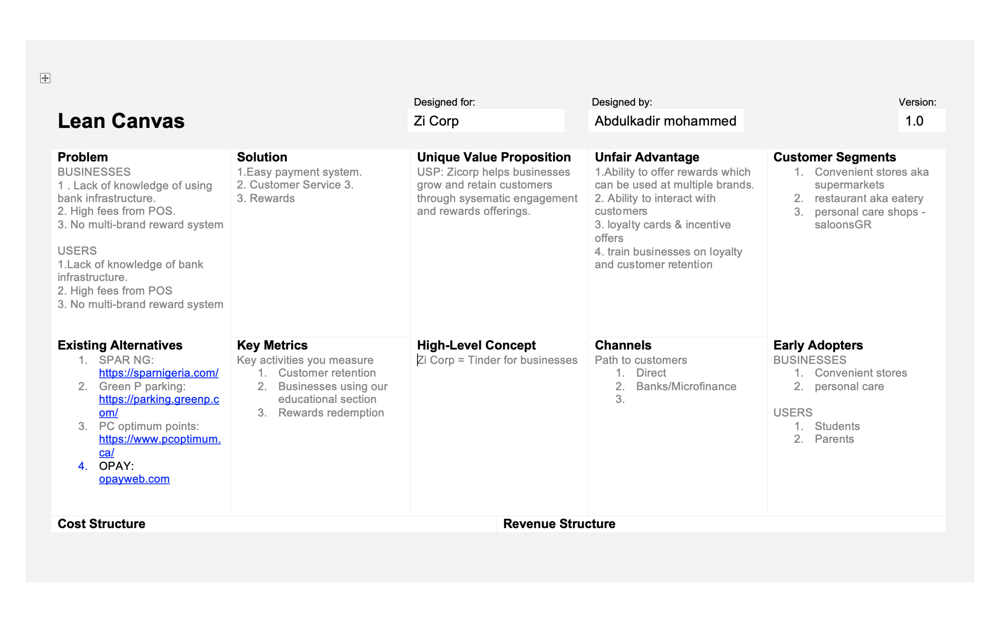
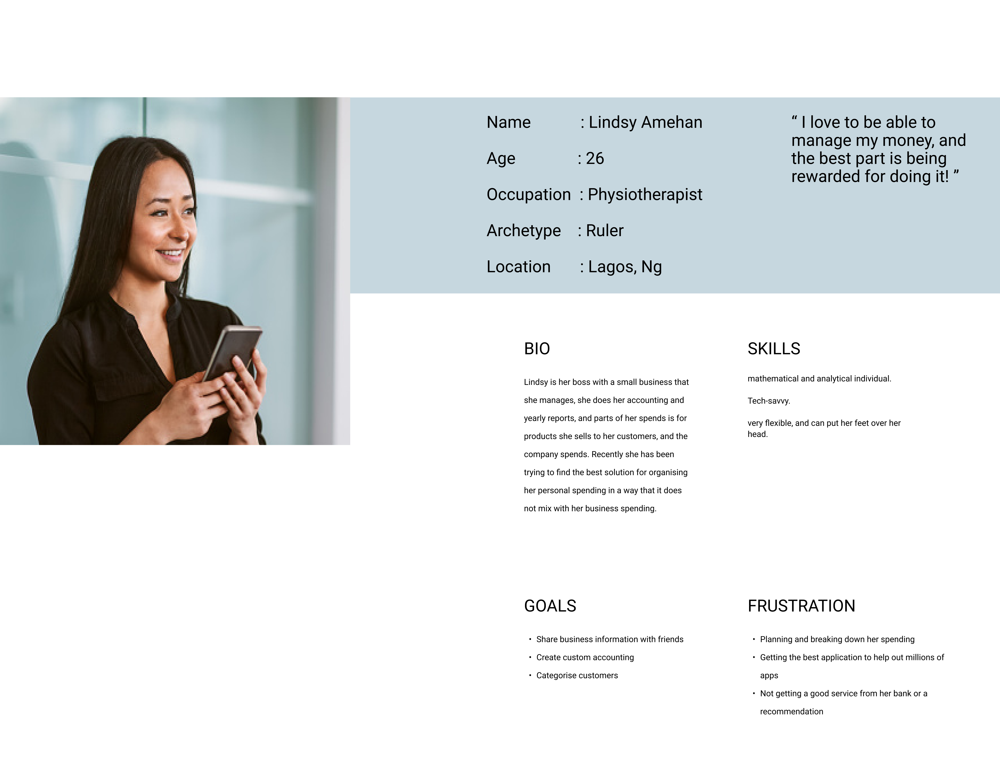
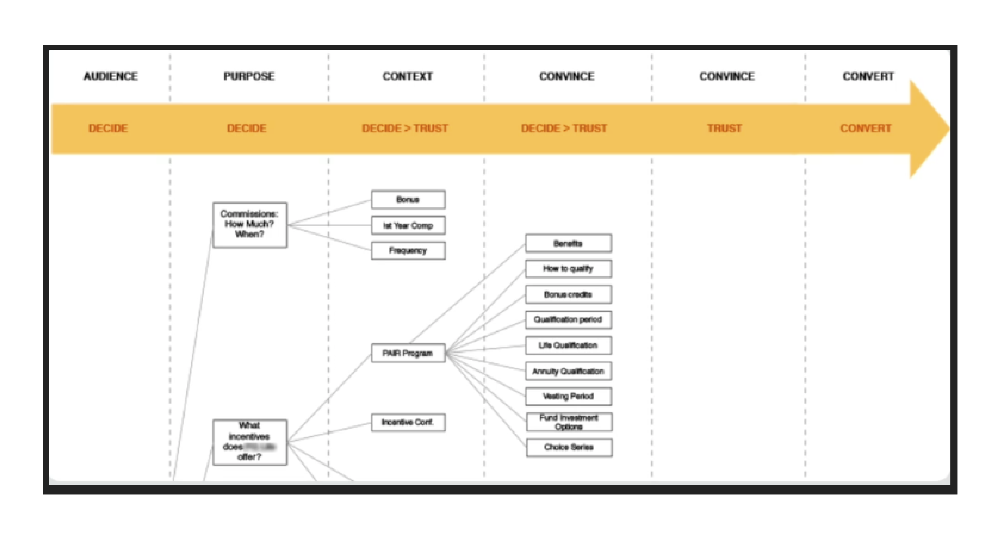
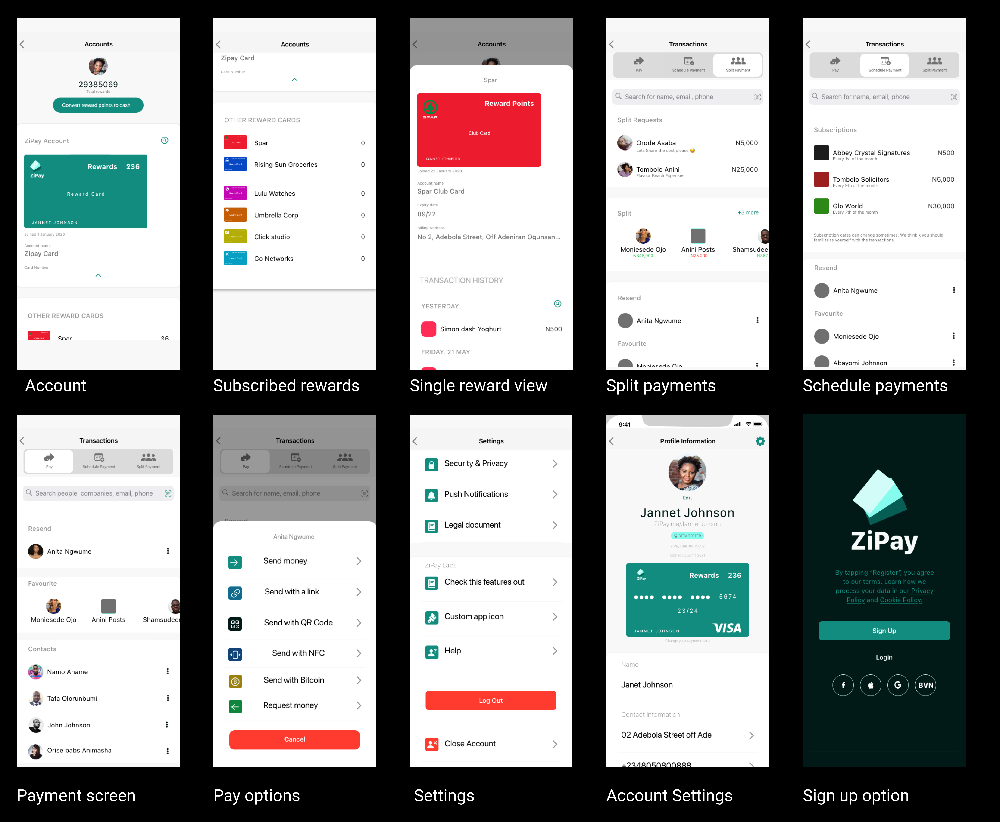
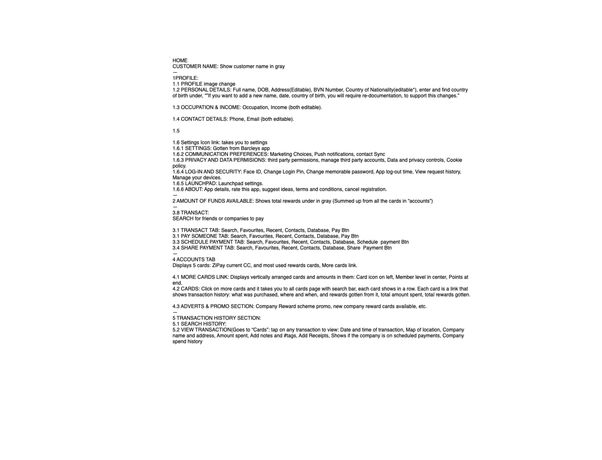
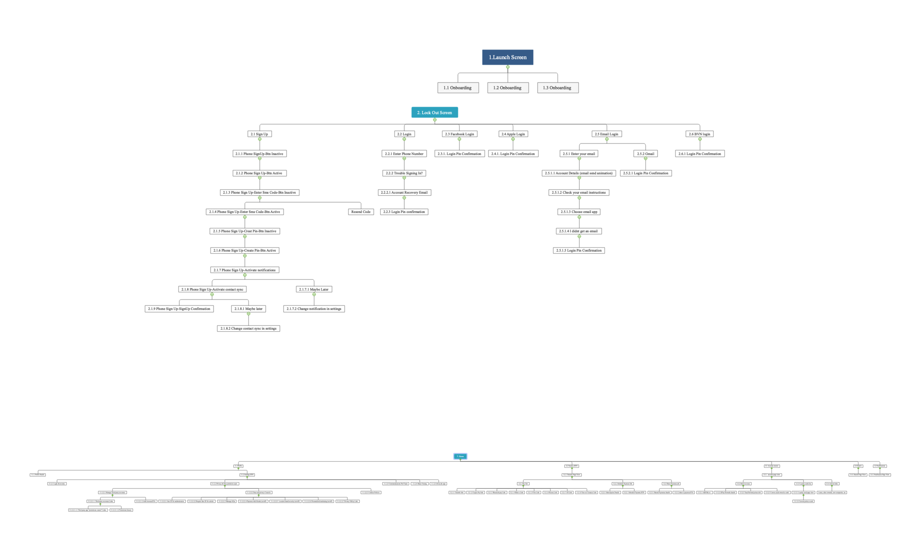
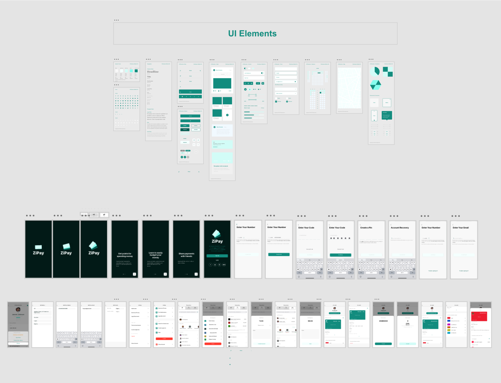

Zi Pay
The problem
Everyday spending is easy; making it rewarding is not. Consumers juggle punch cards, separate loyalty apps, and bank apps that show transactions but rarely help them build habits with the local shops they already visit. Small businesses feel the other side: they need repeat customers, but most cannot afford heavy CRM or loyalty tooling—and paper stamp cards do not give them useful data.
A Canadian banker brought that gap as a product idea: Zi Pay, a points-based mobile wallet for day-to-day spending and local rewards. He needed a prototype and a clearer business story for an investor pitch. I led UX, Lean Stack facilitation, and prototype direction across a three-week engagement.
Planning & strategy
The business side was still thin, so I sequenced the work as Lean model first, evidence second, prototype third. Week one: Lean Stack with the founder. Weeks two–three: research, IA, and an iOS pitch prototype in parallel. To hit time and budget, I advised hiring a junior UX researcher; they ran survey outreach and first-pass synthesis while I owned strategy, decision path, IA, and design.

Lean business model
I facilitated the Lean canvas with the client—value proposition, sides of the marketplace, channels, and early cost/revenue assumptions—and coached him on continuous innovation so he could keep iterating after the engagement. I also built the pitch deck from a ready-made Excel template and shared it on Google Drive for collaboration.
Researching users & businesses
With the canvas in place, we pressure-tested who the product was for. The junior researcher and I split the work: they handled survey distribution and raw response collation; I ran the focus group, competitor/market framing, and synthesis into design decisions.
For merchants, we surveyed small necessity-based businesses—barber shops, convenience stores, carpenters, and similar—on how they win and keep customers, and what would make a loyalty tool worth paying for.
For consumers, I ran a short focus group with the stakeholder’s family and friends: daily spending, shops they revisit, savings/spending apps, and which points systems they actually used. We turned that into five Google Form questions, targeted segments we still lacked, and used an Amazon gift card incentive to get results within 48 hours.
Key findings
Consumers liked earning points, but hated managing many cards or apps—one wallet with multiple local rewards beat another single-brand loyalty app.
People already had favourite weekly shops; the habit to build was “reward me where I already spend,” not “discover random brands.”
Small businesses wanted something lighter than CRM: simple reward offers, help acquiring/retaining customers, and a monthly view of what worked.
Sharing purchases with friends and seeing history were strong retention hooks—points alone were not enough to keep the app open.

Personas
I turned the findings into personas spanning everyday spenders and small-business owners—needs, current workarounds, stated wants, and unmet wants. Those personas stayed on the wall for feature cuts: if a screen did not serve a persona job, it did not make the pitch build.

Customer decision path
Next I mapped the consumer decision path—discover a reward, join, spend, earn, return—and the lighter merchant path of creating an offer and reading results. That path decided what belonged in the first prototype versus later releases.

Business use case
For merchants, the solution concept was a points-based reward-card subscription: publish offers, get guided help on acquisition and retention, let Zi Pay manage rewards data, and receive monthly analytics—loyalty tooling without a full CRM.

Customer use case
For consumers, the must-have journey was: find reward cards through offers or search, add them to one wallet, spend as usual, watch points accumulate, and get a prompt when a purchase unlocked a card—plus history and friend-sharing to give a reason to return.

Feature set & platform choice
I synthesised those use cases into a feature list, checked them against personas and the decision path, then agreed with the client on an iOS-first pitch prototype. The priority was a beautiful, believable demo for investors—not a multi-platform build in three weeks.

Information architecture
With features locked, I built the site map and primary flows so wallet, rewards, offers, purchase history, and social sharing sat in a clear hierarchy for both sides of the marketplace.

UI system, wireframes & design
Working from iOS UI patterns, I built a quick style guide, wireframed the key paths, and evolved those frames into high-fidelity screens for the pitch prototype.
Validation
Formal user testing was out of scope for the pitch timeline. Instead, I validated against the decision path in structured stakeholder walkthroughs: could a consumer find a card, add it, and see rewards grow in under a minute? Could a merchant story be told in the same demo without breaking the narrative? Gaps we found—especially around post-purchase prompts and history—were fixed before the final prototype cut.
End result
The pitch-ready iOS prototype joined both sides of the model: consumers could find companies, claim reward cards, get prompted after a purchase, review history, and share spending with friends—habits designed for return visits, not one-off point collecting.
The client left with a Lean canvas, a collaborative pitch deck, research-backed personas and flows, and a high-fidelity prototype strong enough to present to investors.
Deliverables
UX documentation Research notes, key findings, personas, decision path, feature definition, IA, flows, and stakeholder validation notes supporting the prototype.
Design & prototype assets Style foundation, wireframes, high-fidelity iOS screens, and interactive prototype for the pitch.
Lean canvas & pitch deck Lean Stack business model and collaborative pitch deck for stakeholder presentations.
Permission request Request for permission to use project assets and media in this portfolio.